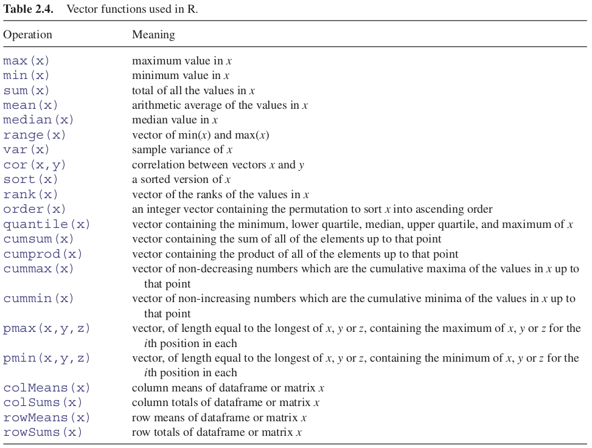

2.7 R Basic Data Structures
2.7.1 Vectors
A vector is a variable with one or more values of the same type (atomic one dimensional arrays). For instance, the numbers of peas in six pods were 4, 7, 6, 5, 6 and 7. The vector called peas is one object of length = 6. In this case, the class of the object is numeric. The easiest way to create a vector in R is to concatenate (link together) the six values using the concatenate function, c, like this:
peas = c(4, 7, 6, 5, 6, 7)We can ask all sorts of questions about the vector called peas. For instance, what type of vector is it?
class(peas)## [1] "numeric"How big is the vector?
length(peas)## [1] 6The great advantage of a vector-based language is that it is very simple to ask quite involved questions that involve all of the values in the vector. These vector functions are often self-explanatory:
mean(peas)## [1] 5.833333max(peas)## [1] 7min(peas)## [1] 4Another way to create a vector is to input data from the keyboard using the function called scan:
#peas = scan()The prompt appears 1: which means type in the first number of peas (4) then press the return key, then the prompt 2: appears (you type in 7) and so on. When you have typed in all six values, and the prompt 7: has appeared, you just press the return key to tell R that the vector is now complete. R replies by telling you how many items it has read:
Read 6 itemsAs we explained, vectors are single-dimensional arrays. The array indexes range from 1 to the vector length, length(v). Vectors are also known as atomic vectors.
All elements of the vector are of the same basic type:
- logical
- integer
- double
- character
- complex
It has a fixed size that is fixed in its creation. The simplest way to create a vector is by using the combination function c(v1, v2,...). To name the elements of a vector we use the function names(v). Here you have some different ways to create vectors in R:
- Using the
vectorfunction
# Logical Vector
v1 = vector(mode = 'logical', length = 4)
v1## [1] FALSE FALSE FALSE FALSE# Integer vector
v2 = vector(mode = 'integer', length = 4)
v2## [1] 0 0 0 0- Using the “type” function
# Numeric vector
v3 = numeric(4)
v3## [1] 0 0 0 0# Character vector
v4 = character(4)
v4## [1] "" "" "" ""2.7.2 Sequences
An important way of creating vectors is to generate a sequence of numbers. The simplest sequences are in steps of 1, and the colon operator is the simplest way of generating such sequences. All you do is specify the first and last values separated by a colon. Here is a sequence from 0 up to 10:
0:10## [1] 0 1 2 3 4 5 6 7 8 9 10Here is a sequence from 15 down to 5:
15:5## [1] 15 14 13 12 11 10 9 8 7 6 5To generate a sequence in steps other than 1, you use the seq function. There are various forms of this, of which the simplest has three arguments: from, to, by (the initial value, the final value and the increment). If the initial value is smaller than the final value, the increment should be positive, like this:
seq(0, 1.5, 0.1)## [1] 0.0 0.1 0.2 0.3 0.4 0.5 0.6 0.7 0.8 0.9 1.0 1.1 1.2 1.3 1.4 1.5If the initial value is larger than the final value, the increment should be negative, like this:
seq(6, 4, -0.2)## [1] 6.0 5.8 5.6 5.4 5.2 5.0 4.8 4.6 4.4 4.2 4.0In many cases, you want to generate a sequence to match an existing vector in length. Rather than having to figure out the increment that will get from the initial to the final value and produce a vector of exactly the appropriate length, R provides the along and length options. Suppose you have a vector of population sizes:
N = c(55,76,92,103,84,88,121,91,65,77,99)You need to plot this against a sequence that starts at 0.04 in steps of 0.01:
seq(from=0.04,by=0.01,length=11)## [1] 0.04 0.05 0.06 0.07 0.08 0.09 0.10 0.11 0.12 0.13 0.14But this requires you to figure out the length of N. A simpler method is to use the along argument and specify the vector, N, whose length has to be matched:
seq(0.04,by=0.01,along=N)## [1] 0.04 0.05 0.06 0.07 0.08 0.09 0.10 0.11 0.12 0.13 0.14Alternatively, you can get R to work out the increment (0.01 in this example), by specifying the start and the end values (from and to), and the name of the vector (N) whose length has to be matched:
seq(from=0.04,to=0.14,along=N)## [1] 0.04 0.05 0.06 0.07 0.08 0.09 0.10 0.11 0.12 0.13 0.14If you want a vector made up of sequences of unequal lengths, then use the sequence function. Suppose that most of the five sequences you want to string together are from 1 to 4, but the second one is 1 to 3 and the last one is 1 to 5, then:
sequence(nvec = c(4,3,4,4,4,5), from = 1, by = 1)## [1] 1 2 3 4 1 2 3 1 2 3 4 1 2 3 4 1 2 3 4 1 2 3 4 52.7.2.1 Generating repeats
You will often want to generate repeats of numbers or characters, for which the function is rep. The object that is named in the first argument is repeated a number of times as specified in the second argument. At its simplest, we would generate five 9s like this:
rep(9,5)## [1] 9 9 9 9 9You can see the issues involved by a comparison of these three increasingly complicated uses of the rep function:
rep(1:4, times = 2)## [1] 1 2 3 4 1 2 3 4In the simplest case, the entire first argument is repeated (i.e. the sequence 1 to 4 appears twice).
rep(1:4, each=2)## [1] 1 1 2 2 3 3 4 4You often want each element of the sequence to be repeated, and this is accomplished with the each argument.
rep(1:4, each = 2, times = 3)## [1] 1 1 2 2 3 3 4 4 1 1 2 2 3 3 4 4 1 1 2 2 3 3 4 4Finally, you might want each number repeated and the whole series repeated a certain number of times (here three times).
When each element of the series is to be repeated a different number of times, then the second argument must be a vector of the same length as the vector comprising the first argument (length 4 in this example). So if we want one 1, two 2s, three 3s and four 4s we would write:
rep(1:4, 1:4)## [1] 1 2 2 3 3 3 4 4 4 4In a more complicated case, there is a different but irregular repeat of each of the elements of the first argument. Suppose that we need four 1s, one 2, four 3s and two 4s. Then we use the concatenation function c to create a vector of length 4 c(4,1,4,2) which will act as the second argument to the rep function:
rep(1:4, c(4,1,4,2))## [1] 1 1 1 1 2 3 3 3 3 4 4Here is the most complex case with character data rather than numbers: each element of the series is repeated an irregular number of times:
rep(c("cat", "dog", "gerbil", "goldfish", "rat"), c(2,3,2,1,3))## [1] "cat" "cat" "dog" "dog" "dog" "gerbil"
## [7] "gerbil" "goldfish" "rat" "rat" "rat"This is the most general, and also the most useful form of the rep function.
2.7.2.2 Generating Factor Levels
The function gl (‘generate levels’) is useful when you want to encode long vectors of factor levels. The syntax for the three arguments is: ‘up to,’ ‘with repeats of,’ ‘to total length.’ Here is the simplest case where we want factor levels up to 4 with repeats of 3 repeated only once (i.e. to total length 12):
gl(4,3)## [1] 1 1 1 2 2 2 3 3 3 4 4 4
## Levels: 1 2 3 4Here is the function when we want that whole pattern repeated twice:
gl(4,3,24)## [1] 1 1 1 2 2 2 3 3 3 4 4 4 1 1 1 2 2 2 3 3 3 4 4 4
## Levels: 1 2 3 4If you want text for the factor levels, rather than numbers, use labels like this:
Temp = gl(2, 2, 24, labels = c("Low", "High"))
Soft = gl(3, 8, 24, labels = c("Hard","Medium","Soft"))
M.user = gl(2, 4, 24, labels = c("N", "Y"))
Brand = gl(2, 1, 24, labels = c("X", "M"))
data.frame(Temp,Soft,M.user,Brand)## Temp Soft M.user Brand
## 1 Low Hard N X
## 2 Low Hard N M
## 3 High Hard N X
## 4 High Hard N M
## 5 Low Hard Y X
## 6 Low Hard Y M
## 7 High Hard Y X
## 8 High Hard Y M
## 9 Low Medium N X
## 10 Low Medium N M
## 11 High Medium N X
## 12 High Medium N M
## 13 Low Medium Y X
## 14 Low Medium Y M
## 15 High Medium Y X
## 16 High Medium Y M
## 17 Low Soft N X
## 18 Low Soft N M
## 19 High Soft N X
## 20 High Soft N M
## 21 Low Soft Y X
## 22 Low Soft Y M
## 23 High Soft Y X
## 24 High Soft Y M2.7.3 Vector and Subscripts
You will often want to use some but not all of the contents of a vector. To do this, you need to master the use of subscripts (or indices as they are also known). In R, subscripts involve the use of square brackets []. Our vector called peas shows the numbers of peas in six pods:
peas = c(4, 7, 6, 5, 6, 7)The first element of peas is 4, the second 7, and so on. The elements are indexed left to right, 1 to 6. It could not be more straightforward. If we want to extract the fourth element of peas (which you can see is a 5) then this is what we do:
peas[4]## [1] 5If we want to extract several values (say the 2nd, 3rd and 6th) we use a vector to specify the pods we want as subscripts, either in two stages like this:
pods = c(2,3,6)
peas[pods]## [1] 7 6 7or in a single step, like this:
peas[c(2,3,6)]## [1] 7 6 7You can drop values from a vector by using negative subscripts. Here are all but the first values of peas:
peas[-1]## [1] 7 6 5 6 7Here are all but the last (note the use of the length function to decide what is last):
peas[-length(peas)]## [1] 4 7 6 5 6We can use sequences of numbers to extract values from a vector. Here are the first three values of peas:
peas[1:3]## [1] 4 7 6Here are the even-numbered values of peas:
peas[seq(2,length(peas), 2)]## [1] 7 5 7or alternatively:
peas[1:length(peas) %% 2 == 0]## [1] 7 5 7Using the modulo function %% on the sequence 1 to 6 to extract the even numbers 2, 4 and 6. Finally, we can assign some value to the elements between some specific indices
peas[4:5] = 0
peas## [1] 4 7 6 0 0 72.7.3.1 Classes of vector
The vector called peas contained numbers: in the jargon, it is of class numeric. R allows vectors of six types, so long as all of the elements in one vector belong to the same class. The classes are logical, integer, real, complex, string (or character) or raw. You will use numeric, logical and character variables all the time. Engineers and mathematicians will use complex numbers. But you could go a whole career without ever needing to use integer or raw.
2.7.3.2 Naming elements within vectors
It is often useful to have the values in a vector labelled in some way. For instance, if our data are counts of 0, 1, 2, . . . occurrences in a vector called counts,
counts = c(25,12,7,4,6,2,1,0,2)so that there were 25 zeros, 12 ones and so on, it would be useful to name each of the counts with the relevant number 0 to 8:
names(counts) = 0:8Now when we inspect the vector called counts we see both the names and the frequencies:
counts## 0 1 2 3 4 5 6 7 8
## 25 12 7 4 6 2 1 0 2Or even access to some element using its name:
counts["0"]## 0
## 252.7.3.3 Working with logical subscripts
Take the example of a vector containing the 11 numbers 0 to 10:
x = 0:10There are two quite different kinds of things we might want to do with this. We might want to add up the values of the elements:
sum(x)## [1] 55Alternatively, we might want to count the elements that passed some logical criterion. Suppose we wanted to know how many of the values were less than 5:
sum(x<5)## [1] 5You see the distinction. We use the vector function sum in both cases. But sum(x) adds up the values of the x’s and sum(x<5) counts up the number of cases that pass the logical condition ‘x is less than 5.’ This works because of coercion. Logical TRUE has been coerced to numeric 1 and logical FALSE has been coerced to numeric 0.
How do you add up the values of just some of the elements of x? We specify a logical condition, but we do not want to count the number of cases that pass the condition, we want to add up all the values of the cases that pass.
Note that when we counted the number of cases, the counting was applied to the entire vector, using sum(x<5). To find the sum of the values of x that are less than 5, we write:
sum(x[x<5])## [1] 10Let us look at this in more detail. The logical condition x<5 is either true or false:
x<5## [1] TRUE TRUE TRUE TRUE TRUE FALSE FALSE FALSE FALSE FALSE FALSEYou can imagine false as being numeric 0 and true as being numeric 1. Then the vector of subscripts [x<5] is five 1s followed by six 0s:
as.numeric(x<5)## [1] 1 1 1 1 1 0 0 0 0 0 0Now imagine multiplying the values of x by the values of the logical vector
x*(x<5)## [1] 0 1 2 3 4 0 0 0 0 0 0When the function sum is applied, it gives us the answer we want: the sum of the values of the numbers 0 + 1 + 2 + 3 + 4 = 10.
sum(x*(x<5))## [1] 10This produces the same answer as sum(x[x<5]), but is rather less elegant. There are many other ways of indexing elements of a vector using logical operators. We have a vector with values between 0 and 100:
v = 0:100We can select all the elements over 30:
v[v>30]## [1] 31 32 33 34 35 36 37 38 39 40 41 42 43 44 45 46 47 48 49
## [20] 50 51 52 53 54 55 56 57 58 59 60 61 62 63 64 65 66 67 68
## [39] 69 70 71 72 73 74 75 76 77 78 79 80 81 82 83 84 85 86 87
## [58] 88 89 90 91 92 93 94 95 96 97 98 99 100even, all those over 30 and under or equal 50:
v[v > 30 & v <= 50]## [1] 31 32 33 34 35 36 37 38 39 40 41 42 43 44 45 46 47 48 49 50Finally, we can use a specific set of elements to select those from the vector:
v[ v %in% c(10, 20, 30)]## [1] 10 20 302.7.4 Vector Operations
When arithmetic operations are performed between two vectors, R returns another vector with the results of the element by element operation. Boolean operations are also possible. Most functions and operations are “vectorized.”
avector = c(1,2,3)
bvector = c(4,5,6)If we sum up the two vectors the result will be a new vector with the sum of the elements with the same index:
avector + bvector## [1] 5 7 9If the vectors are not the same size, R repeats the smallest of them as many times as necessary.
avector + 1## [1] 2 3 4Vectors multiplication will follow the same rule, as the multiplication by an scalar:
avector * bvector## [1] 4 10 18avector*2## [1] 2 4 6If we want to multiplicate vectors as one-dimensional matrices (dot product) we need to use a different sintax:
avector %*% bvector## [,1]
## [1,] 32In this case we obtained an scalar because the inner product was computed, but we can transpose one of the vectors to obtain the outer product using the t() function:
avector %*% t(bvector)## [,1] [,2] [,3]
## [1,] 4 5 6
## [2,] 8 10 12
## [3,] 12 15 182.7.5 Vector Functions
One of R’s great strengths is its ability to evaluate functions over entire vectors, thereby avoiding the need for loops and subscripts. The most important vector functions are listed in Table 2.4.

Here is a numeric vector:
y = c(8,3,5,7,6,6,8,9,2,3,9,4,10,4,11)Some vector functions produce a single number:
mean(y)## [1] 6.333333Others produce two numbers:
range(y)## [1] 2 11here showing that the minimum was 2 and the maximum was 11. Other functions produce several numbers:
fivenum(y)## [1] 2.0 4.0 6.0 8.5 11.0This is Tukey’s famous five-number summary: the minimum, the lower hinge, the median, the upper hinge and the maximum.
Perhaps the single most useful vector function in R is table. You need to see it in action to appreciate just how good it is. Here is a huge vector called counts containing 10 000 random integers between 0 and 10 from a uniform distribution
counts = sample(1:10, size = 10000, replace = TRUE)Here is a look at the first 30 values in counts:
counts[1:30]## [1] 10 7 9 7 3 4 7 1 5 7 1 3 4 1 6 5 7 5 10 5 6 8 2 3 3
## [26] 7 1 8 2 5The question is this: how many zeros are there in the whole vector of 10 000 numbers, how many 1s, and so on right up to the largest value within counts? A formidable task for you or me, but for R it is just:
table(counts)## counts
## 1 2 3 4 5 6 7 8 9 10
## 1017 986 989 987 974 978 997 1022 1053 9972.7.5.1 tapply function
One of the most important functions in all of R is tapply. It does not sound like much from the name, but you will use it time and again for calculating means, variances, sample sizes, minima and maxima. With weather data, for instance, we might want the 12 monthly mean temperatures rather than the whole-year average. We have a response variable, temperature, and a categorical explanatory variable, month:
temperature = read.csv("./Data/city_temperature.csv")
attach(temperature)
names(temperature)## [1] "Region" "Country" "State" "City"
## [5] "Month" "Day" "Year" "AvgTemperature"tapply(AvgTemperature, Month, mean)## 1 2 3 4 5 6 7 8
## 30.90471 33.50187 38.67561 46.13972 52.81063 59.37346 63.68533 63.12633
## 9 10 11 12
## 55.79678 47.70037 38.83678 30.47562It is easy to apply other functions in the same way: here are the monthly variances
tapply(AvgTemperature,Month,var)## 1 2 3 4 5 6 7 8
## 694.4614 633.2653 697.8510 767.8669 973.1084 1042.9352 980.9215 948.5103
## 9 10 11 12
## 882.3228 812.8217 785.9120 979.5516and the monthly max
tapply(AvgTemperature,Month,max)## 1 2 3 4 5 6 7 8 9 10 11 12
## 66.5 68.6 74.8 81.1 88.7 102.5 100.4 101.0 91.4 83.3 74.5 70.0If R does not have a built in function to do what you want, then you can easily write your own. Here, for instance, is a function to calculate the standard error of each mean (these are called anonymous functions in R, because they are unnamed):
tapply(AvgTemperature, Month, function(x) sqrt(var(x)/length(x)))## 1 2 3 4 5 6 7 8
## 0.1446289 0.1446299 0.1449792 0.1545970 0.1730663 0.1835656 0.1751918 0.1723541
## 9 10 11 12
## 0.1689770 0.1595505 0.1594831 0.1746138The tapply function is very flexible. It can produce multi-dimensional tables simply by replacing the one categorical variable (Month) by a list of categorical variables. Here are the monthly means calculated separately for each year, as specified by list(Year,Month). The variable you name first in the list (Year) will appear as the row of the results table and the second will appear as the columns (Month):
tapply(AvgTemperature,list(Year,Month),mean)[,1:6]## 1 2 3 4 5 6
## 200 NA NA NA NA NA NA
## 201 NA NA NA NA NA NA
## 1995 22.59082 31.34159 31.27190 37.80881 44.95441 50.55163
## 1996 18.08208 19.10475 25.95685 35.57652 43.73778 50.99244
## 1997 25.79462 30.60540 33.23219 39.33719 46.48344 53.38289
## 1998 27.00767 29.15087 32.80416 40.43363 48.75534 54.22356
## 1999 26.07477 30.85468 35.46308 42.24148 47.33011 54.67496
## 2000 25.05871 32.17456 35.57957 46.41452 53.99290 59.49000
## 2001 33.14029 33.28294 40.46552 43.84822 52.21448 54.50970
## 2002 30.88344 36.58143 34.60559 43.68704 54.10151 38.15141
## 2003 28.42867 26.63484 36.12358 40.95430 48.39011 56.53770
## 2004 27.87397 31.66127 37.06129 44.72202 52.05897 62.11159
## 2005 35.04232 31.47177 38.67312 48.97246 55.90238 63.44032
## 2006 29.23203 32.16905 38.62158 47.16979 53.53997 60.69301
## 2007 40.09750 38.35009 43.29540 52.09333 57.68266 65.78025
## 2008 37.41471 40.13305 42.38426 50.03049 58.44178 64.35772
## 2009 33.20831 35.33643 42.16637 47.20308 59.01427 64.22975
## 2010 25.41574 30.35200 37.11865 45.17927 51.46735 60.83972
## 2011 32.77954 33.30758 40.97986 50.51585 57.07600 62.27951
## 2012 35.67784 30.45354 45.51511 49.80105 58.81749 60.94851
## 2013 34.17175 35.80811 37.82493 49.38892 57.52337 64.08892
## 2014 37.04133 35.72973 46.33086 52.17991 57.58596 64.26360
## 2015 36.87864 36.98958 43.73880 50.28946 57.90881 64.77072
## 2016 34.73095 41.22544 38.58570 50.50559 53.44534 65.47865
## 2017 30.96312 39.02403 46.69494 48.59640 58.65650 66.35387
## 2018 34.86553 32.96776 39.32351 53.77184 61.45348 65.32789
## 2019 30.31927 40.28722 45.52725 46.30789 34.89703 66.84974
## 2020 38.31691 42.69720 44.17044 50.36505 53.66778 NAThe subscripts [,1:6] simply restrict the output to the first six months.
There is just one thing about tapply that might confuse you. If you try to apply a function that has built-in protection against missing values, then tapply may not do what you want, producing NA instead of the numerical answer. This is most likely to happen with the mean function because its default is to produce NA when there are one or more missing values. The remedy is to provide an extra argument to tapply, specifying that you want to see the average of the non-missing values. Use na.rm=TRUE to remove the missing values like this:
tapply(AvgTemperature,Year,mean,na.rm=TRUE)## 200 201 1995 1996 1997 1998 1999 2000
## -99.00000 -99.00000 38.63447 36.53759 41.29181 40.93638 42.25044 46.42167
## 2001 2002 2003 2004 2005 2006 2007 2008
## 44.92223 43.83141 43.50428 47.62057 48.85940 48.09095 50.78713 51.06084
## 2009 2010 2011 2012 2013 2014 2015 2016
## 49.92104 47.09856 49.96520 49.11578 51.17017 52.33811 51.77581 50.39242
## 2017 2018 2019 2020
## 51.68254 50.20742 49.60530 44.80030You might want to trim some of the extreme values before calculating the mean (the arithmetic mean is famously sensitive to outliers). The trim option allows you to specify the fraction of the data (between 0 and 0.5) that you want to be omitted from the left- and right-hand tails of the sorted vector of values before computing the mean of the central values:
tapply(AvgTemperature,Year,mean,trim=0.2)## 200 201 1995 1996 1997 1998 1999 2000
## -99.00000 -99.00000 49.73343 48.49846 50.11555 50.42651 51.01058 52.25806
## 2001 2002 2003 2004 2005 2006 2007 2008
## 51.33122 51.84361 50.82469 51.57898 51.90048 52.28212 52.73041 52.23925
## 2009 2010 2011 2012 2013 2014 2015 2016
## 52.62449 50.94259 52.62774 51.74824 51.57276 53.23475 52.13158 52.07910
## 2017 2018 2019 2020
## 52.29157 53.30457 52.35184 44.954092.7.5.2 aggregate function
Suppose that we have two response variables (y and z) and two explanatory variables (x and w) that we might want to use to summarize functions like mean or variance of y and/or z. The aggregate function has a formula method which allows elegant summaries of four kinds:
- one to one:
aggregate(y ~ x, mean) - one to many:
aggregate(y ~ x + w, mean) - many to one:
aggregate(cbind(y,z) ~ x, mean) - many to many:
aggregate(cbind(y,z) ~ x + w, mean)
Here is an example using a dataframe with many categorical and continuous variables:
df = read.csv("./Data/bank.csv", sep = ";", stringsAsFactors = TRUE)
head(df)## age job marital education default housing loan contact
## 1 30 blue-collar married basic.9y no yes no cellular
## 2 39 services single high.school no no no telephone
## 3 25 services married high.school no yes no telephone
## 4 38 services married basic.9y no unknown unknown telephone
## 5 47 admin. married university.degree no yes no cellular
## 6 32 services single university.degree no no no cellular
## month day_of_week duration campaign pdays previous poutcome emp.var.rate
## 1 may fri 487 2 999 0 nonexistent -1.8
## 2 may fri 346 4 999 0 nonexistent 1.1
## 3 jun wed 227 1 999 0 nonexistent 1.4
## 4 jun fri 17 3 999 0 nonexistent 1.4
## 5 nov mon 58 1 999 0 nonexistent -0.1
## 6 sep thu 128 3 999 2 failure -1.1
## cons.price.idx cons.conf.idx euribor3m nr.employed y
## 1 92.893 -46.2 1.313 5099.1 no
## 2 93.994 -36.4 4.855 5191.0 no
## 3 94.465 -41.8 4.962 5228.1 no
## 4 94.465 -41.8 4.959 5228.1 no
## 5 93.200 -42.0 4.191 5195.8 no
## 6 94.199 -37.5 0.884 4963.6 noHere is one-to-one use of aggregate to find mean the cons.price.idx in the different marital samples:
aggregate(cons.price.idx ~ marital, df, mean)## marital cons.price.idx
## 1 divorced 93.60055
## 2 married 93.59904
## 3 single 93.52997
## 4 unknown 93.53755Here is a one-to-many use to look at the interaction between marital and contact:
aggregate(cons.price.idx ~ marital + contact, df, mean)## marital contact cons.price.idx
## 1 divorced cellular 93.34316
## 2 married cellular 93.32591
## 3 single cellular 93.34077
## 4 unknown cellular 93.27671
## 5 divorced telephone 94.04743
## 6 married telephone 94.03531
## 7 single telephone 93.99391
## 8 unknown telephone 93.99400Finally, here is a many-to-many use to find mean euribor3m as well as mean cons.price.idx for the interaction between marital and contact:
aggregate(cbind(cons.price.idx, euribor3m) ~ marital + contact, df, mean)## marital contact cons.price.idx euribor3m
## 1 divorced cellular 93.34316 3.155212
## 2 married cellular 93.32591 3.206862
## 3 single cellular 93.34077 2.936846
## 4 unknown cellular 93.27671 3.282143
## 5 divorced telephone 94.04743 4.665497
## 6 married telephone 94.03531 4.561857
## 7 single telephone 93.99391 4.372266
## 8 unknown telephone 93.99400 4.8580002.7.5.3 Parallel minima and maxima
Here are three vectors of the same length, x, y and z. The parallel minimum function, pmin, finds the minimum from any one of the three variables for each subscript, and produces a vector as its result (of length equal to the longest of x, y, or z):
x = runif(6)
x## [1] 0.8711427 0.4030111 0.5606412 0.2872073 0.2260351 0.1647041y = runif(6)
y## [1] 0.9675614 0.2442290 0.9152520 0.2996409 0.5876295 0.9767194z = runif(6)
z## [1] 0.6375336 0.9140610 0.3177856 0.4496507 0.6497485 0.2029685pmin(x,y,z)## [1] 0.6375336 0.2442290 0.3177856 0.2872073 0.2260351 0.16470412.7.5.4 Summary by groups with tapply
The vector function tapply is one of the most important and useful vector functions to master. The ‘t’ stands for ‘table’ and the idea is to apply a function to produce a table from the values in the vector, based on one or more grouping variables (often the grouping is by factor levels). This sounds much more complicated than it really is:
daphnia = read.table("./Data/daphnia.txt", header = TRUE)
attach(daphnia)
names(daphnia)## [1] "Growth.rate" "Water" "Detergent" "Daphnia"The response variable is Growth.rate and the other three variables are factors. Suppose we want the mean growth rate for each detergent:
tapply(Growth.rate, Detergent, mean)## BrandA BrandB BrandC BrandD
## 3.884832 4.010044 3.954512 3.558231This produces a table with four entries, one for each level of the factor called Detergent.
To produce a two-dimensional table we put the two grouping variables in a list. Here we calculate the median growth rate for water type and daphnia clone:
tapply(Growth.rate,list(Water,Daphnia),median)## Clone1 Clone2 Clone3
## Tyne 2.874053 3.908644 4.618288
## Wear 2.590373 5.532726 4.302642The first variable in the list creates the rows of the table and the second the columns.
2.7.5.5 Addresses within vectors
There is an important function called which for finding addresses within vectors. The vector y looks like this:
y = c(8,3,5,7,6,6,8,9,2,3,9,4,10,4,11)Suppose we wanted to know which elements of y contained values bigger than 5. We type:
which(y>5)## [1] 1 4 5 6 7 8 11 13 15Notice that the answer to this enquiry is a set of subscripts. We do not use subscripts inside the which function itself. The function is applied to the whole array. To see the values of y that are larger than 5, we just type:
y[y>5]## [1] 8 7 6 6 8 9 9 10 112.7.5.6 Finding closest values
Finding the value in a vector that is closest to a specified value is straightforward using which. The vector x contains 1000 random numbers from a normal distribution with mean = 100 and standard deviation = 10:
set.seed(2020)
x = rnorm(1000, 100, 10)Here, we want to find the value of x that is closest to 108.0. The logic is to work out the difference between 108 and each of the 1000 random numbers, then find which of these differences is the smallest. This is what the R code looks like:
which(abs(x-108) == min(abs(x-108)))## [1] 626The closest value to 108.0 is in location 626 within x. But just how close to 108.0 is this 626 value? We use 626 as a subscript on x to find this out:
x[626]## [1] 108.01392.7.5.7 Sorting, Ranking and Ordering
These three related concepts are important, and one of them (order) is difficult to understand at the beginning. Let us take a simple example:
set.seed(2020)
houses_prices = runif(10, 150, 500)
houses_prices## [1] 376.4160 287.9790 366.4756 316.9119 197.6340 173.5845 195.2034 287.5913
## [9] 150.9039 367.0721We apply the three different functions to the vector called houses_price:
ranks = rank(houses_prices)
ranks## [1] 10 6 8 7 4 2 3 5 1 9sorted = sort(houses_prices)
sorted## [1] 150.9039 173.5845 195.2034 197.6340 287.5913 287.9790 316.9119 366.4756
## [9] 367.0721 376.4160ordered = order(houses_prices)
ordered## [1] 9 6 7 5 8 2 4 3 10 1Let’s create a data frame to observe the data easily:
view = data.frame(houses_prices, ranks, sorted, ordered)
view## houses_prices ranks sorted ordered
## 1 376.4160 10 150.9039 9
## 2 287.9790 6 173.5845 6
## 3 366.4756 8 195.2034 7
## 4 316.9119 7 197.6340 5
## 5 197.6340 4 287.5913 8
## 6 173.5845 2 287.9790 2
## 7 195.2034 3 316.9119 4
## 8 287.5913 5 366.4756 3
## 9 150.9039 1 367.0721 10
## 10 367.0721 9 376.4160 1RANK: The prices themselves are in no particular sequence. The ranks column contains the value that is the rank of the particular data point (value of Price), where 1 is assigned to the lowest data point and length(Price) – here 10 – is assigned to the highest data point.
SORT: The sorted vector is very straightforward. It contains the values of Price sorted into ascending order. If you want to sort into descending order, use the reverse order function rev like this:
rev(sort(houses_prices))## [1] 376.4160 367.0721 366.4756 316.9119 287.9790 287.5913 197.6340 195.2034
## [9] 173.5845 150.9039ORDER: This is the most important of the three functions, and the hardest to understand. The numbers in this column are subscripts between 1 and 10. The order function returns an integer vector containing the permutation that will sort the input into ascending order.
Using order with subscripts is a much safer option than using sort, because with sort the values of the response variable and the explanatory variables could be uncoupled with potentially disastrous results if this is not realized at the time that modelling was carried out.
Imagine we have another variable that is the location of the house represented by a letter:
set.seed(2020)
location = sample(LETTERS, 10)
location## [1] "L" "W" "V" "A" "Q" "D" "J" "F" "X" "M"We can use the order function to organize the location of the houses like this:
location[order(houses_prices)]## [1] "X" "D" "J" "Q" "F" "W" "A" "V" "M" "L"2.7.5.8 unique and duplicated functions
The difference is best seen with a simple example. Here is a vector of names:
names = c("Williams","Jones","Smith","Williams","Jones","Williams")We can see how many times each name appears using table:We can see how many times each name appears using table:
table(names)## names
## Jones Smith Williams
## 2 1 3It is clear that the vector contains just three different names. The function called unique extracts these three unique names, creating a vector of length 3, unsorted, in the order in which the names are encountered in the vector:
unique(names)## [1] "Williams" "Jones" "Smith"In contrast, the function called duplicated produces a vector, of the same length as the vector of names, containing the logical values either FALSE or TRUE, depending upon whether or not that name has appeared already (reading from the left). You need to see this in action to understand what is happening, and why it might be useful:
duplicated(names)## [1] FALSE FALSE FALSE TRUE TRUE TRUEThe first three names are not duplicated (FALSE), but the last three are all duplicated (TRUE). We can mimic the unique function by using this vector as subscripts like this:
names[!duplicated(names)]## [1] "Williams" "Jones" "Smith"There you have it: if you want a shortened vector, containing only the unique values in names, then use unique, but if you want a vector of the same length as names then use duplicated.
2.7.6 Sets
There are three essential functions for manipulating sets. The principles are easy to see if we work with an example of two sets:
setA = c("a", "b", "c", "d", "e")
setB = c("d", "e", "f", "g")The union of two sets is everything in the two sets taken together, but counting elements only once that are common to both sets:
union(setA, setB)## [1] "a" "b" "c" "d" "e" "f" "g"The intersection of two sets is the material that they have in common:
intersect(setA, setB)## [1] "d" "e"Note, however, that the difference between two sets is order-dependent. It is the material that is in the first named set, that is not in the second named set. Thus setdiff(A,B) gives a different answer than setdiff(B,A). For our example:
setdiff(setA, setB)## [1] "a" "b" "c"setdiff(setB, setA)## [1] "f" "g"There is also a built-in function setequal for testing if two sets are equal:
setequal(setA, setB)## [1] FALSEYou can use %in% for comparing sets. The result is a logical vector whose length matches the vector on the left:
setA %in% setB## [1] FALSE FALSE FALSE TRUE TRUEsetB %in% setA## [1] TRUE TRUE FALSE FALSE2.7.7 Factors
Conceptually, factors are variables in R which take on a limited number of different values; such variables are often refered to as categorical variables. One of the most important uses of factors is in statistical modeling; since categorical variables enter into statistical models differently than continuous variables, storing data as factors ensures that the modeling functions will treat such data correctly.
Factors in R are stored as a vector of integer values with a corresponding set of character values to use when the factor is displayed. The factor function is used to create a factor. The only required argument to factor is a vector of values which will be returned as a vector of factor values. Both numeric and character variables can be made into factors, but the factor levels will always be character values. You can see the possible levels for a factor through the levels command.
To change the order in which the levels will be displayed from their default sorted order, the levels= argument can be given a vector of all the possible values of the variable in the order you desire. If the ordering should also be used when performing comparisons, use the optional ordered=TRUE argument. In this case, the factor is known as an ordered factor.
Reminder:
Categorical variable: one that can take a limited number of possible values (categories). Examples of categorical variables: gender of a person, nationality…
- Categorical nominal variable: one that does not have a pre-established order.
- Categorical ordinal variable: that which has an established order.
Continuous variable: one that can take an infinite number of possible values. Examples of continuous variables: weight of a person, height of a person…
The different values that the variable can take are called levels, factor levels.
Why use factors?
- They allow to establish a different order than the alphabetical one.
- Many R models/packages use them
Factors are categorical variables that have a fixed number of levels. A simple example of a factor might be a variable called gender with two levels: ‘female’ and ‘male.’ If you had three females and two males, you could create the factor like this:
gender = factor(c("female", "male", "female", "male", "female"))
class(gender)## [1] "factor"mode(gender)## [1] "numeric"More often, you will create a dataframe by reading your data from a file using read.table. When we did this in the previous version of R (R3), the strings in our data table were automatically converted into factors. This was useful as long as our data table was well structured and clean, but it could cause problems in some cases. Let’s see an example of a well-structured data table:
data = read.table(file = "./Data/GenderPurchase.csv", header = TRUE, sep = ",")
is.factor(data$Gender)## [1] FALSEAs we can see, in this version of R (R4), the strings are coded as default character type. We can solve this by adding a parameter to our command as seen below:
data = read.table(file = "./Data/GenderPurchase.csv", header = TRUE, sep = ",", stringsAsFactors = TRUE)
is.factor(data$Gender)## [1] TRUELet’s see what happens with a data table that is not well structured in case of reading the strings as factors:
data = read.table(file = "./Data/titanic3.csv", header = TRUE, sep = ",", stringsAsFactors = TRUE)
str(data)## 'data.frame': 1309 obs. of 14 variables:
## $ pclass : int 1 1 1 1 1 1 1 1 1 1 ...
## $ survived : int 1 1 0 0 0 1 1 0 1 0 ...
## $ name : Factor w/ 1307 levels "Abbing, Mr. Anthony",..: 22 24 25 26 27 31 46 47 51 55 ...
## $ sex : Factor w/ 2 levels "female","male": 1 2 1 2 1 2 1 2 1 2 ...
## $ age : num 29 0.917 2 30 25 ...
## $ sibsp : int 0 1 1 1 1 0 1 0 2 0 ...
## $ parch : int 0 2 2 2 2 0 0 0 0 0 ...
## $ ticket : Factor w/ 929 levels "110152","110413",..: 188 50 50 50 50 125 93 16 77 826 ...
## $ fare : num 211 152 152 152 152 ...
## $ cabin : Factor w/ 187 levels "","A10","A11",..: 45 81 81 81 81 151 147 17 63 1 ...
## $ embarked : Factor w/ 4 levels "","C","Q","S": 4 4 4 4 4 4 4 4 4 2 ...
## $ boat : Factor w/ 28 levels "","1","10","11",..: 13 4 1 1 1 14 3 1 28 1 ...
## $ body : int NA NA NA 135 NA NA NA NA NA 22 ...
## $ home.dest: Factor w/ 370 levels "","?Havana, Cuba",..: 310 232 232 232 232 238 163 25 23 230 ...We can find ourselves with variables that are completely useless and very difficult to manage, with as many levels of the factors as cases we have in the data table.
In these cases it is much more comfortable to read the strings as characters and work on those variables to extract useful information from them as we will see later.
We will use the daphnia dataset to perform some examples with factors:
daphnia = read.table("./Data/daphnia.txt", header = TRUE, stringsAsFactors = TRUE)
attach(daphnia)## The following objects are masked from daphnia (pos = 3):
##
## Daphnia, Detergent, Growth.rate, WaterThere are some important functions for dealing with factors. You will often want to check that a variable is a factor (especially if the factor levels are numbers rather than characters):
is.factor(Water)## [1] TRUETo discover the names of the factor levels, we use the levels function:
levels(Detergent)## [1] "BrandA" "BrandB" "BrandC" "BrandD"To discover the number of levels of a factor, we use the nlevels function:
nlevels(Detergent)## [1] 4The same result is achieved by applying the length function to the levels of a factor:
length(levels(Detergent))## [1] 4By default, factor levels are treated in alphabetical order. If you want to change this (as you might, for instance, in ordering the bars of a bar chart) then this is straightforward: just type the factor levels in the order that you want them to be used, and provide this vector as the second argument to the factor function.
Suppose we have an experiment with three factor levels in a variable called treatment, and we want them to appear in this order: ‘nothing,’ ‘single’ dose and ‘double’ dose. We shall need to override R’s natural tendency to order them ‘double,’ ‘nothing,’ ‘single’:
set.seed(2020)
treatment = as.factor(sample(c("double", "nothing", "single"), 100, replace = TRUE))
response = sample(c(0,1), 100, replace = TRUE)
tapply(response, treatment, mean)## double nothing single
## 0.4166667 0.4871795 0.4000000This is achieved using the factor function like this:
treatment = factor(treatment,levels=c("nothing","single","double"))Now we get the order we want:
tapply(response,treatment,mean)## nothing single double
## 0.4871795 0.4000000 0.4166667Only == and != can be used for factors. Note, also, that a factor can only be compared to another factor with an identical set of levels (not necessarily in the same ordering) or to a character vector. For example, you cannot ask quantitative questions about factor levels, like > or <=, even if these levels are numeric.
To turn factor levels into numbers (integers) use the unclass function like this:
as.vector(unclass(treatment))## [1] 2 1 3 3 1 1 3 3 1 1 1 3 1 2 1 3 1 1 1 2 1 2 1 3 2 1 1 1 2 1 2 2 3 3 3 1 2
## [38] 3 3 1 2 3 3 3 2 3 3 2 1 1 1 3 2 1 3 1 2 3 3 1 3 1 2 1 2 1 1 3 2 1 2 3 1 2
## [75] 1 1 1 3 3 3 2 1 1 3 3 1 3 3 1 3 2 3 2 3 3 2 2 2 1 32.7.8 Matrices and Arrays
An array is a multi-dimensional object. The dimensions of an array are specified by its dim attribute, which gives the maximal indices in each dimension. So for a three-dimensional array consisting of 24 numbers in a sequence 1:24, with dimensions 2 × 4 × 3, we write:
y = 1:24
dim(y) = c(2,4,3)
y## , , 1
##
## [,1] [,2] [,3] [,4]
## [1,] 1 3 5 7
## [2,] 2 4 6 8
##
## , , 2
##
## [,1] [,2] [,3] [,4]
## [1,] 9 11 13 15
## [2,] 10 12 14 16
##
## , , 3
##
## [,1] [,2] [,3] [,4]
## [1,] 17 19 21 23
## [2,] 18 20 22 24This produces three two-dimensional tables, because the third dimension is 3. This is what happens when you change the dimensions:
dim(y) = c(3,2,4)
y## , , 1
##
## [,1] [,2]
## [1,] 1 4
## [2,] 2 5
## [3,] 3 6
##
## , , 2
##
## [,1] [,2]
## [1,] 7 10
## [2,] 8 11
## [3,] 9 12
##
## , , 3
##
## [,1] [,2]
## [1,] 13 16
## [2,] 14 17
## [3,] 15 18
##
## , , 4
##
## [,1] [,2]
## [1,] 19 22
## [2,] 20 23
## [3,] 21 24Now we have four two-dimensional tables, each of three rows and two columns.
A matrix is a two-dimensional array containing numbers. A dataframe is a two-dimensional list containing (potentially a mix of) numbers, text or logical variables in different columns.
When there are two subscripts [5,3] to an object like a matrix or a dataframe, the first subscript refers to the row number (5 in this example; the rows are defined as margin number 1) and the second subscript refers to the column number (3 in this example; the columns are margin number 2).
There is an important and powerful convention in R, such that when a subscript appears as a blank it is understood to mean ‘all of.’ Thus:
- [,4] means all rows in column 4 of an object;
- [2,] means all columns in row 2 of an object.
2.7.9 Matrices
There are several ways of making a matrix. You can create one directly like this:
X = matrix(c(1,0,0,0,1,0,0,0,1),nrow=3)
X## [,1] [,2] [,3]
## [1,] 1 0 0
## [2,] 0 1 0
## [3,] 0 0 1where, by default, the numbers are entered column-wise.
The class and attributes of X indicate that it is a matrix of three rows and three columns (these are its dim attributes):
class(X)## [1] "matrix" "array"attributes(X)## $dim
## [1] 3 3In the next example, the data in the vector appear row-wise, so we indicate this with byrow=T:
vector = c(1,2,3,4,4,3,2,1)
V = matrix(vector,byrow=T,nrow=2)
V## [,1] [,2] [,3] [,4]
## [1,] 1 3 4 2
## [2,] 2 4 3 1Another way to convert a vector into a matrix is by providing the vector object with two dimensions (rows and columns) using the dim function like this:
dim(vector) = c(4,2)
is.matrix(vector)## [1] TRUEWe need to be careful, however, because we have made no allowance at this stage for the fact that the data were entered row-wise into vector:
vector## [,1] [,2]
## [1,] 1 4
## [2,] 2 3
## [3,] 3 2
## [4,] 4 1The matrix we want is the transpose, t, of this matrix:
t(vector)## [,1] [,2] [,3] [,4]
## [1,] 1 2 3 4
## [2,] 4 3 2 12.7.9.1 Naming the rows and columns of matrices
At first, matrices have numbers naming their rows and columns (see above). Here is a 4 × 5 matrix of random integers from a Poisson distribution with mean 1.5:
X = matrix(rpois(20,1.5),nrow=4)
X## [,1] [,2] [,3] [,4] [,5]
## [1,] 0 2 4 0 1
## [2,] 1 6 2 2 2
## [3,] 0 2 3 1 1
## [4,] 1 2 1 1 1Suppose that the rows refer to four different trials and we want to label the rows ‘Trial.1’ etc. We employ the function rownames to do this. We could use the paste function but here we take advantage of the prefix option:
rownames(X) = rownames(X,do.NULL=FALSE,prefix="Trial.")
X## [,1] [,2] [,3] [,4] [,5]
## Trial.1 0 2 4 0 1
## Trial.2 1 6 2 2 2
## Trial.3 0 2 3 1 1
## Trial.4 1 2 1 1 1For the columns we want to supply a vector of different names for the five drugs involved in the trial, and use this to specify the colnames(X):
drug.names = c("aspirin", "paracetamol", "nurofen", "hedex", "placebo")
colnames(X) = drug.names
X## aspirin paracetamol nurofen hedex placebo
## Trial.1 0 2 4 0 1
## Trial.2 1 6 2 2 2
## Trial.3 0 2 3 1 1
## Trial.4 1 2 1 1 12.7.9.2 Matrices Functions
Using R, we can operate with matrices easily, since by default this type of data structures are designed for matrix algebra.
Let’s create a matrix to see some examples:
M1 = matrix(1:9, byrow = T, nrow = 3)
M1## [,1] [,2] [,3]
## [1,] 1 4 7
## [2,] 2 5 8
## [3,] 3 6 9We can know the size of the matrix using the dim function:
dim(M1)## [1] 3 3We can also create diagonal matrices using the diag function:
diag(5)## [,1] [,2] [,3] [,4] [,5]
## [1,] 1 0 0 0 0
## [2,] 0 1 0 0 0
## [3,] 0 0 1 0 0
## [4,] 0 0 0 1 0
## [5,] 0 0 0 0 1Or even create a diagonal matrix using a defined vector:
diag(c(1,2,3))## [,1] [,2] [,3]
## [1,] 1 0 0
## [2,] 0 2 0
## [3,] 0 0 3We can calculate a matrix transpose:
t(M1)## [,1] [,2] [,3]
## [1,] 1 2 3
## [2,] 4 5 6
## [3,] 7 8 9And the trace of a matrix easily:
sum(diag(M1))## [1] 15To calculate the determinant we just need to use the det function:
det(M1)## [1] 0In case the determinant is not 0 we can calculate the inverse of that matrix using the solve function. Let’s see what happens in this case:
#solve(M1)Error in solve.default(M1) : system is computationally singular: reciprocal condition number = 2.59052e-18We can create a random matrix to check this function:
set.seed(2020)
M2 = matrix(sample(1:100, size = 9), byrow = T, nrow = 3)
det(M2)## [1] -345436And now apply the solve function:
solve(M2)## [,1] [,2] [,3]
## [1,] -0.0111048067 0.016060862 -0.003925474
## [2,] 0.0149550134 -0.003381234 -0.005662409
## [3,] -0.0001418497 -0.004226543 0.016894591Finally, we can perform a matrix decomposition using the eigen function in R, obtaining the eigenvectors and the eigenvalues of that decomposition,
eigen(M1)## eigen() decomposition
## $values
## [1] 1.611684e+01 -1.116844e+00 -5.700691e-16
##
## $vectors
## [,1] [,2] [,3]
## [1,] -0.4645473 -0.8829060 0.4082483
## [2,] -0.5707955 -0.2395204 -0.8164966
## [3,] -0.6770438 0.4038651 0.4082483or even a Singular Value Decomposition using the svd function:
s = svd(M1)
s## $d
## [1] 1.684810e+01 1.068370e+00 5.543107e-16
##
## $u
## [,1] [,2] [,3]
## [1,] -0.4796712 0.77669099 0.4082483
## [2,] -0.5723678 0.07568647 -0.8164966
## [3,] -0.6650644 -0.62531805 0.4082483
##
## $v
## [,1] [,2] [,3]
## [1,] -0.2148372 -0.8872307 0.4082483
## [2,] -0.5205874 -0.2496440 -0.8164966
## [3,] -0.8263375 0.3879428 0.4082483We can check that R makes a successful decomposition:
s$u %*% diag(s$d) %*% t(s$v)## [,1] [,2] [,3]
## [1,] 1 4 7
## [2,] 2 5 8
## [3,] 3 6 92.7.9.3 Matrices Operations
We can perform arithmetic operations with matrices (additions, subtractions, multiplications…) in a similar way as we have done with vectors.
M1 = matrix(1:9, byrow = TRUE, nrow = 3)
M2 = matrix(11:19, byrow = TRUE, nrow = 3)
M3 = M1 + M2
M3## [,1] [,2] [,3]
## [1,] 12 14 16
## [2,] 18 20 22
## [3,] 24 26 28M1 + 2## [,1] [,2] [,3]
## [1,] 3 4 5
## [2,] 6 7 8
## [3,] 9 10 11In the case of matrices multiplication we must remember that two matrices can be multiplied only when the number of columns in the first equals the number of rows in the second
M1 = matrix(1:6, byrow = TRUE, nrow = 3, ncol = 2)
M1## [,1] [,2]
## [1,] 1 2
## [2,] 3 4
## [3,] 5 6M2 = matrix(10:15, byrow = TRUE, nrow = 2, ncol = 3)
M2## [,1] [,2] [,3]
## [1,] 10 11 12
## [2,] 13 14 15M3 = M1 %*% M2
M3## [,1] [,2] [,3]
## [1,] 36 39 42
## [2,] 82 89 96
## [3,] 128 139 150M4 = M2 %*% M1
M4## [,1] [,2]
## [1,] 103 136
## [2,] 130 172We can also apply some other R built-in functions to a matrix. For example:
rowSumswill sum up all the elements for each rowcolSumswill do the same by columnsrowMeanswill calculate the mean of each row (is the same for columns withcolMeans)summarywill show some statistics about the matrix by columns
summary(M4)## V1 V2
## Min. :103.0 Min. :136
## 1st Qu.:109.8 1st Qu.:145
## Median :116.5 Median :154
## Mean :116.5 Mean :154
## 3rd Qu.:123.2 3rd Qu.:163
## Max. :130.0 Max. :1722.7.9.4 Matrices Manipulation
To add columns to a matrix you use the function cbind(m1, m2, ...), which joins matrices and/or vectors per column.
M5 = cbind(M1, M3)
M5## [,1] [,2] [,3] [,4] [,5]
## [1,] 1 2 36 39 42
## [2,] 3 4 82 89 96
## [3,] 5 6 128 139 150We can add just a new column:
M5 = cbind(M5, c(1,2,3))
M5## [,1] [,2] [,3] [,4] [,5] [,6]
## [1,] 1 2 36 39 42 1
## [2,] 3 4 82 89 96 2
## [3,] 5 6 128 139 150 3To add rows to a matrix you use the rbind(m1, m2, ...) function, which joins arrays and/or vectors per row.
M5 = rbind(M2, M3)
M5## [,1] [,2] [,3]
## [1,] 10 11 12
## [2,] 13 14 15
## [3,] 36 39 42
## [4,] 82 89 96
## [5,] 128 139 150And we can add an extra row using the same function:
M5 = rbind(M5, c(1,2,3))
M5## [,1] [,2] [,3]
## [1,] 10 11 12
## [2,] 13 14 15
## [3,] 36 39 42
## [4,] 82 89 96
## [5,] 128 139 150
## [6,] 1 2 32.7.9.5 Indexing Matrices
As with vectors, we will use the square brackets [ ] to index matrices. In the particular case of matrices we will use two integers: one for the row and one for the column [row, column].
To select all the elements of a row or a column, it is enough not to include any number before or after the comma, respectively. For example: matrix[row, ]; matrix[, col].
M1 = matrix(1:9, byrow = T, nrow = 3)
M1## [,1] [,2] [,3]
## [1,] 1 4 7
## [2,] 2 5 8
## [3,] 3 6 9Let’s see some examples:
# We select the first two rows
M1[1:2,]## [,1] [,2] [,3]
## [1,] 1 4 7
## [2,] 2 5 8# We select the last column
M1[, ncol(M1)]## [1] 7 8 9As we did with vectors, we can use vectors to perform selections inside a matrix,
# Select the first and last columns
M1[, c(1,ncol(M1))]## [,1] [,2]
## [1,] 1 7
## [2,] 2 8
## [3,] 3 9and assign values to a specific position
M1[1,1] = 0
M1## [,1] [,2] [,3]
## [1,] 0 4 7
## [2,] 2 5 8
## [3,] 3 6 9Finally, we can use logical expressions to select elements inside a matrix:
M1[M1 < 4]## [1] 0 2 3M1[M1 > 3 & M1 < 8]## [1] 4 5 6 72.7.10 Lists
Lists are extremely important objects in R. You will have heard of the problems of ‘comparing apples and oranges’ or how two things are ‘as different as chalk and cheese.’ You can think of lists as a way of getting around these problems. Here are four completely different objects: a numeric vector, a logical vector, a vector of character strings and a vector of complex numbers:
apples = c(4,4.5,4.2,5.1,3.9)
oranges = c(TRUE, TRUE, FALSE)
chalk = c("limestone", "marl","oolite", "CaC03")
cheese = c(3.2-4.5i,12.8+2.2i)We cannot bundle them together into a dataframe, because the vectors are of different lengths. However, despite their differences, however, we can bundle them together in a single list called items:
items = list(apples,oranges,chalk,cheese)
items## [[1]]
## [1] 4.0 4.5 4.2 5.1 3.9
##
## [[2]]
## [1] TRUE TRUE FALSE
##
## [[3]]
## [1] "limestone" "marl" "oolite" "CaC03"
##
## [[4]]
## [1] 3.2-4.5i 12.8+2.2iSubscripts on vectors, matrices, arrays and dataframes have one set of square brackets [6], [3,4] or [2,3,2,1], but subscripts on lists have double square brackets [[2]] or [[i,j]]. If we want to extract the chalk from the list, we use subscript [[3]]:
items[[3]]## [1] "limestone" "marl" "oolite" "CaC03"If we want to extract the third element within chalk (oolite) then we use single subscripts after the double subscripts like this:
items[[3]][3]## [1] "oolite"There is another indexing convention in R which is used to extract named components from lists using the element names operator $. This is known as ‘indexing tagged lists.’ For this to work, the elements of the list must have names. At the moment our list called items has no names:
names(items)## NULLYou can give names to the elements of a list in the function that creates the list by using the equals sign like this:
items = list(first=apples,second=oranges,third=chalk,fourth=cheese)Now you can extract elements of the list by name
items$fourth## [1] 3.2-4.5i 12.8+2.2i2.7.10.1 lapply function
We can ask a variety of questions about our new list object:
class(items)## [1] "list"is.numeric(items)## [1] FALSEis.list(items)## [1] TRUElength(items)## [1] 4Note that the length of a list is the number of items in the list, not the lengths of the individual vectors within the list.
The function lapply applies a specified function to each of the elements of a list in turn (without the need for specifying a loop, and not requiring us to know how many elements there are in the list). A useful function to apply to lists is the length function; this asks how many elements comprise each component of the list. Technically we want to know the length of each of the vectors making up the list:
lapply(items, length)## $first
## [1] 5
##
## $second
## [1] 3
##
## $third
## [1] 4
##
## $fourth
## [1] 2This shows that items consists of four vectors, and shows that there were 5 elements in the first vector, 3 in the second 4 in the third and 2 in the fourth. But 5 of what, and 3 of what? To find out, we apply the function class to the list:
lapply(items, class)## $first
## [1] "numeric"
##
## $second
## [1] "logical"
##
## $third
## [1] "character"
##
## $fourth
## [1] "complex"So the answer is there were 5 numbers in the first vector, 3 logical variables in the second, 4 character strings in the third vector and 2 complex numbers in the fourth.
Applying numeric functions to lists will only work for objects of class numeric or complex, or objects (like logical values) that can be coerced into numbers. Here is what happens when we use lapply to apply the function mean to items:
lapply(items, mean)## Warning in mean.default(X[[i]], ...): argument is not numeric or logical:
## returning NA## $first
## [1] 4.34
##
## $second
## [1] 0.6666667
##
## $third
## [1] NA
##
## $fourth
## [1] 8-1.15iFinally, the most useful overview of the contents of a list is obtained with str, the structure function:
str(items)## List of 4
## $ first : num [1:5] 4 4.5 4.2 5.1 3.9
## $ second: logi [1:3] TRUE TRUE FALSE
## $ third : chr [1:4] "limestone" "marl" "oolite" "CaC03"
## $ fourth: cplx [1:2] 3.2-4.5i 12.8+2.2i2.7.11 Data Frames
Data frame is a two dimensional data structure in R. It is a special case of a list which has each component of equal length.
2.7.11.1 Check if a variable is a data frame or not
We can check if a variable is a data frame or not using the class() function.
typeof(x)## [1] "list"class(x)## [1] "data.frame"In this example, x can be considered as a list of 3 components with each component having a two element vector.
2.7.11.2 Functions of data frame
Here you have some useful functions we can use to have a better understanding about the content we have inside our data frame:
- We can check the names of the variables using the
names()function
names(x)## [1] "SN" "Age" "Gender"- We can know the number of columns and rows we have in our data frame (the
length()function will return also the number of columns, it is taking the number of elements we are storing in the underlying list, which are the column vectors):
ncol(x)## [1] 3nrow(x)## [1] 2length(x)## [1] 3- The
str()and thesummary()are the most useful functions to understand our data frames:
str(x)## 'data.frame': 2 obs. of 3 variables:
## $ SN : int 1 2
## $ Age : num 21 15
## $ Gender: chr "Male" "Female"summary(x)## SN Age Gender
## Min. :1.00 Min. :15.0 Length:2
## 1st Qu.:1.25 1st Qu.:16.5 Class :character
## Median :1.50 Median :18.0 Mode :character
## Mean :1.50 Mean :18.0
## 3rd Qu.:1.75 3rd Qu.:19.5
## Max. :2.00 Max. :21.02.7.11.3 How to create a data frame
We can create a data frame using the data.frame() function. Below you can see how to create the data frame we are using for all the previous examples:
x = data.frame("SN" = 1:2, "Age" = c(21,15), "Gender" = c("Male","Female"))Let’s take another look to the data frame structure:
str(x)## 'data.frame': 2 obs. of 3 variables:
## $ SN : int 1 2
## $ Age : num 21 15
## $ Gender: chr "Male" "Female"Which is the type of the Gender variable? Do we need to change it? It is a character vector and, in order to use this variable in future models we will need to transform it into a factor. Remember that R3 automatically converts all the characters into factors, but we need to define those in R4.
x = data.frame("SN" = 1:2, "Age" = c(21,15), "Gender" = c("Male","Female"), stringsAsFactors = T)
str(x)## 'data.frame': 2 obs. of 3 variables:
## $ SN : int 1 2
## $ Age : num 21 15
## $ Gender: chr "Male" "Female"NOTE: Many data input functions of R like, read.table(), read.csv(), read.delim(), read.fwf() also read data into a data frame.
2.7.11.4 How to access components of a data frame
Components of data frame can be accessed like a list or like a matrix.
2.7.11.4.1 Accessing like a list
We can use either [, [[ or $ operator to access columns of data frame.
Accessing with [[ or $ is similar. However, it differs for [ in that, indexing with [ will return us a data frame but the other two will reduce it into a vector.
x["Gender"]## Gender
## 1 Male
## 2 Femalex$Age## [1] 21 15x[["Gender"]]## [1] "Male" "Female"x[2]## Age
## 1 21
## 2 15x[[3]]## [1] "Male" "Female"2.7.11.4.2 Accessing like a matrix
Data frames can be accessed like a matrix by providing index for row and column.
To illustrate this, we use datasets already available in R. Datasets that are available can be listed with the command library(help = "datasets").
We will use the trees dataset which contains Girth, Height and Volume for Black Cherry Trees.
A data frame can be examined using functions like str() and head().
str(trees)## 'data.frame': 31 obs. of 3 variables:
## $ Girth : num 8.3 8.6 8.8 10.5 10.7 10.8 11 11 11.1 11.2 ...
## $ Height: num 70 65 63 72 81 83 66 75 80 75 ...
## $ Volume: num 10.3 10.3 10.2 16.4 18.8 19.7 15.6 18.2 22.6 19.9 ...head(trees, 3)## Girth Height Volume
## 1 8.3 70 10.3
## 2 8.6 65 10.3
## 3 8.8 63 10.2We can see that trees is a data frame with 31 rows and 3 columns. We also display the first 3 rows of the data frame.
Now we proceed to access the data frame like a matrix.
trees[2:3,] # select 2nd and 3rd row## Girth Height Volume
## 2 8.6 65 10.3
## 3 8.8 63 10.2trees[trees$Height > 82,] # selects rows with Height greater than 82## Girth Height Volume
## 6 10.8 83 19.7
## 17 12.9 85 33.8
## 18 13.3 86 27.4
## 31 20.6 87 77.02.7.11.5 How to modify a Data Frame
Data frames can be modified like we modified matrices through reassignment.
x[1,"Age"] = 20; x## SN Age Gender
## 1 1 20 Male
## 2 2 15 Female2.7.11.5.1 Adding Components
Rows can be added to a data frame using the rbind() function.
(rbind(x,list(1,16,"Female")))## SN Age Gender
## 1 1 20 Male
## 2 2 15 Female
## 3 1 16 FemaleSimilarly, we can add columns using cbind().
(cbind(x,State=c("NY","FL")))## SN Age Gender State
## 1 1 20 Male NY
## 2 2 15 Female FLSince data frames are implemented as list, we can also add new columns through simple list-like assignments.
x$State = c("NY","FL"); x## SN Age Gender State
## 1 1 20 Male NY
## 2 2 15 Female FL2.7.11.5.2 Deleting Components
Data frame columns can be deleted by assigning NULL to it.
x$State = NULL; x## SN Age Gender
## 1 1 20 Male
## 2 2 15 FemaleSimilarly, rows can be deleted through reassignments.
x = x[-1,]; x## SN Age Gender
## 2 2 15 Female2.7.11.6 Exporting a data frame
As we have mentioned before, any data table we import in R will take the form of a data frame by default. This facilitates us enormously the work of data cleaning since there are many libraries that work on data frames and will help us in this process. We will see many of these resources in the “Data Wrangling” module.
For now, we only need some knowledge of importing and exporting data tables in R. Let’s start with a built-in dataframe like trees.
head(trees, 3)## Girth Height Volume
## 1 8.3 70 10.3
## 2 8.6 65 10.3
## 3 8.8 63 10.2This dataframe can be exported in different formats, but let’s see only the two main ones that we will use in R, .csv and .txt. The basic function in R for exporting data is called write.table(), and it has a lot of parameters. My recommendation is that you take a look at the documentation of this function to familiarize yourself with it.
The main parameters of the write.table() function are
x: will be the object we want to export, in this case a data framefile: is the name of the file to be exported. In this argument we can also enter a path to organize the file in our OS. The file will take the extension that we indicate in its name.append: we will use it if the file already exists and we want to add new information. By default it isFALSE.quote: by default it is alsoFALSE.If you set it toTRUEthis parameter will return the factors and strings with quotessep: in this parameter we can decide how to separate the columns of our file. The default is a comma.dec: this parameter will allow us to change the symbol of the decimals that by default is a dot.- …
Let’s see an example. Next we are going to export the data frame trees as a .txt file.
write.table(x = trees, file = "./Data/trees.txt", quote = TRUE, sep = ";", dec = ",", row.names = FALSE)Although the function write.table() already provides a simple method to export data tables, we can also use the function write.csv(), which will facilitate the export of .csv files with a predetermined format to facilitate their subsequent use.
This function write.csv() or write.csv2() (a second version that has different default parameters) use as a base the write.table() function, so its behavior is practically the same.
Let’s see the same example, but exporting the file in this case as a .csv:
write.csv(x = trees, file = "./Data/trees.csv")
write.csv2(x = trees, file = "./Data/trees2.csv")2.7.11.7 Importing a data frame
When importing data tables the operation will be exactly the same. In this case, the basic function of R is read.table(), and the functions read.csv() and read.csv2() use the previous one to define other behaviors focused on reading .csv files.
The parameters of read.table() are the same as those of write.table() with some exceptions.
header: is a logical parameter (TRUE/FALSE) that indicates if the file contains a header.quote: it is not a logical parameter anymore, but it allows us to decide how we want to code the quotes.row.namesandcol.names: they also existed in the previous function but in this case they make more sense. These parameters will take a vector the size of the number of rows or columns respectively, and set it as such in the data framena.strings: logical vector that by default is FALSE, and assigns as NA’s to all character type elements.skip: is a parameter that will skip the number of lines of the data table that we indicate with an integer.stringsAsFactors: logical vector that by default is FALSE and helps us to code the character type vectors as factors. In some cases it will be useful, but in others we prefer to have the versatility that character vectors offer.
Let’s see how to import the files that we have previously exported with the read.table() function:
df = read.table(file = "./Data/trees.txt", header = TRUE, sep = ";", dec = ",",
na.strings = FALSE, stringsAsFactors = TRUE)
str(df)## 'data.frame': 31 obs. of 3 variables:
## $ Girth : num 8.3 8.6 8.8 10.5 10.7 10.8 11 11 11.1 11.2 ...
## $ Height: int 70 65 63 72 81 83 66 75 80 75 ...
## $ Volume: num 10.3 10.3 10.2 16.4 18.8 19.7 15.6 18.2 22.6 19.9 ...In the case of the functions read.csv() and read.csv2() we can ensure that the format in which we have exported the files will be the same as that in which we should read it:
df1 = read.csv(file = "./Data/trees.csv")
str(df1)## 'data.frame': 31 obs. of 4 variables:
## $ X : int 1 2 3 4 5 6 7 8 9 10 ...
## $ Girth : num 8.3 8.6 8.8 10.5 10.7 10.8 11 11 11.1 11.2 ...
## $ Height: int 70 65 63 72 81 83 66 75 80 75 ...
## $ Volume: num 10.3 10.3 10.2 16.4 18.8 19.7 15.6 18.2 22.6 19.9 ...df2 = read.csv2(file = "./Data/trees2.csv")
str(df2)## 'data.frame': 31 obs. of 4 variables:
## $ X : int 1 2 3 4 5 6 7 8 9 10 ...
## $ Girth : num 8.3 8.6 8.8 10.5 10.7 10.8 11 11 11.1 11.2 ...
## $ Height: int 70 65 63 72 81 83 66 75 80 75 ...
## $ Volume: num 10.3 10.3 10.2 16.4 18.8 19.7 15.6 18.2 22.6 19.9 ...